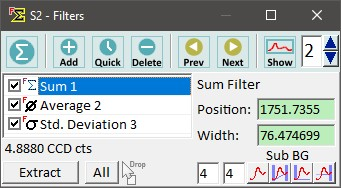
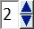
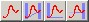

|
|
描述
滤波器查看器使用定义的滤波器（例如求和滤波器）从图像-图谱对象（或从线-图谱对象创建图谱对象，或从单光谱创建单个结果值）创建图像。
另请参阅
输入与结果
输入：
您可以在该对话框中使用任何图谱对象。
结果：
结果取决于输入图谱对象的维度。
滤波器查看器为每个定义的滤波器创建以下结果：
特殊功能
用户界面

创建求和滤波器（按钮）：
创建一个新的求和滤波器。
创建滤波器（按钮）：
您可以通过按下"创建滤波器"并选择其中一个可用滤波器来简单创建新滤波器。
请参阅过滤列表以获取每个滤波器及其用途的简要描述。
快速滤波器（按钮）：
如果您想将滤波器保存到硬盘并在以后重新加载，可以使用"快速滤波器"菜单。
您可以使用白色过滤列表框中的上下文菜单保存选定的滤波器。可以使用快速滤波器按钮保存所有滤波器。
保存在快速滤波器目录中的滤波器会自动显示在快速滤波器菜单中。
您可以打开该目录，使用子目录组织您的快速滤波器，这些子目录将作为快速滤波器菜单中的子菜单显示。
删除（按钮）：
删除所有选定的滤波器。
上一个/下一个（按钮）：
切换到项目管理器中的下一个或上一个可能的图谱对象，以将其用作新的输入图谱对象。
快捷键：在预览图像查看器（显示滤波器的结果）中按 Page-Up 或 Page-Down。
显示输入图谱（复选按钮）：
显示或隐藏显示（平均后）输入图谱的图谱查看器窗口。

空间平均尺寸（整数编辑）：
定义扫描光谱的平均滤波器尺寸，这些光谱将在上述图谱查看器中平均并显示为预览。
提取（按钮）：
这将为选定的滤波器创建新的数据对象。
全部（按钮）：
这将为您的所有滤波器创建新的数据对象。
过滤列表框：
显示所有滤波器
"4.8880 CCD 计数。"（标签）
显示单光谱输入图谱对象的选定滤波器结果。
位置（浮点编辑）：
定义选定滤波器的位置。
双击可从任何图谱查看器窗口监听位置；如果监听已启用，编辑框将变为红色。再次双击可禁用监听。
宽度（浮点编辑）
定义选定滤波器的宽度。滤波器范围将从 <位置 - 宽度/2> 到 <位置 + 宽度/2>。
双击可从任何图谱查看器窗口监听位置；如果监听已启用，编辑框将变为红色。再次双击可禁用监听。
背景扣除（编辑框和按钮）
更改当前滤波器使用的背景扣除：

点击工具按钮进行定义：拖放区域/批处理
如果拖放的图谱具有相同的维度和 x 变换类型，则以下两个选项可用：